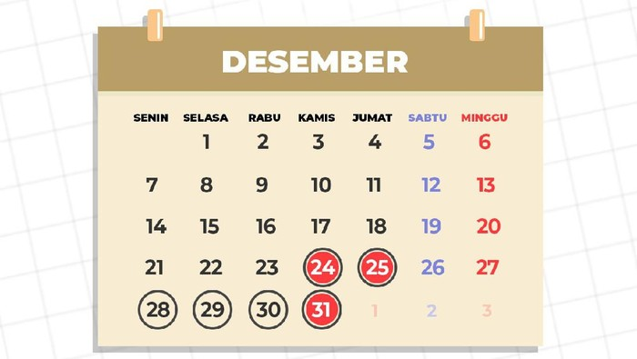

Cuti Bersama 2020, Pekan Ini Ada Libur Panjang 5 Hari Tetap Jaga 3M
Kabar gembira bagi kamu yang belum puas libur akhir pekan minggu lalu yang hanya dua hari. Pasalnya, pada pekan ini, kamu bisa menikmati libur panjang selama lima hari. Hal itu dikarenakan Pemerintah telah menetapkan libur cuti bersama Maulid Nabi Muhammad SAW pada Rabu dan Jumat (28 dan 30 Oktober 2020). Sementara itu, libur nasional Maulid Nabi Muhammad SAW jatuh pada Kamis (29/10/2020). Dengan demikian, masyarakat bisa libur panjang selama lima hari mulai hari ini, Rabu (28/10/2020) hingga Minggu (1/11/2020).
Setelah libur panjang akhir pekan ini, cuti bersama akan bisa kamu nikmati kembali pada cuti bersama Hari Raya Natal 24 Desember 2020, dan 28-31 Desember untuk cuti bersama Tahun Baru 2021.